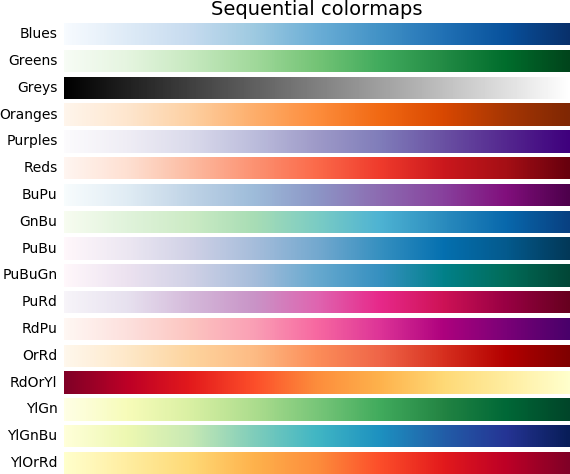
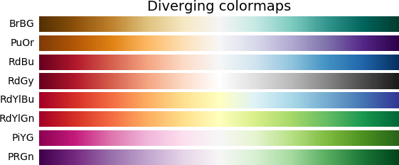
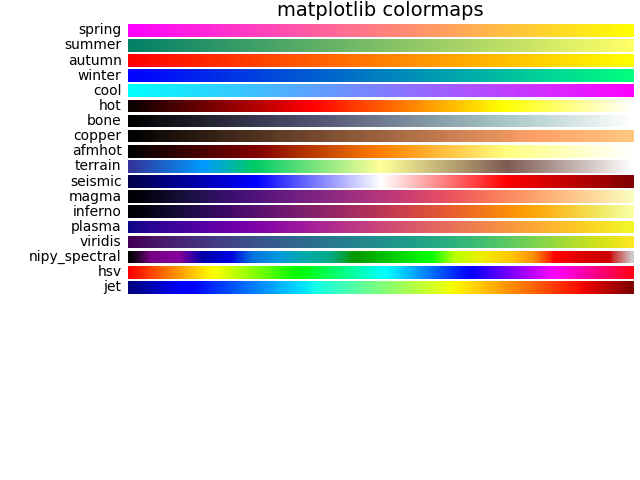
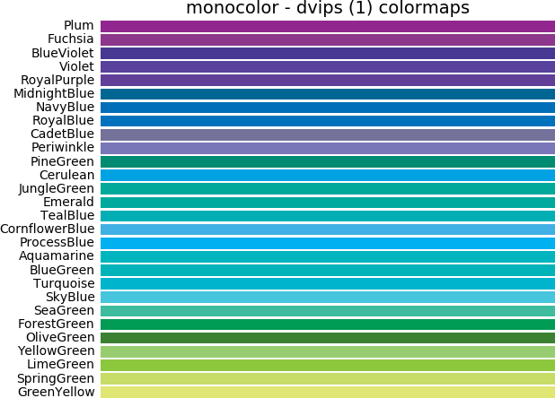

Documentation: cppcolormap.readthedocs.org
Doxygen documentation: tdegeus.github.io/cppcolormap
cppcolormap
C++ and Python library specifying colormaps.







Contents
Disclaimer
This library is free to use under the GPLv3 license. Any additions are very much appreciated, in terms of suggested functionality, code, documentation, testimonials, word-of-mouth advertisement, etc. Bug reports or feature requests can be filed on GitHub. As always, the code comes with no guarantee. None of the developers can be held responsible for possible mistakes.
Download: .zip file | .tar.gz file.
(c - GPLv3) T.W.J. de Geus (Tom) | tom@g.nosp@m.eus..nosp@m.me | www.geus.me | github.com/tdegeus/cppcolormap
Contributors
Usage from C++
Getting cppcolormap
Using conda
From source
Usage
The principle interface is with these two functions:
Lists of colormaps and color-cycles can be found below.
The colormaps are stored as a matrix whereby each row contains the (R,G,B) colors. Each color value has a range [0..1]. The number of colors varies from map to map, but can be interpolated by specifying the number of colors you want:
Note that the colorcycles are not interpolatable. Consequently the functions do have a size option. Note also that the colormaps and colorcycles can also be called directly, e.g.
Find match
To find the closest match of each color of a colormap in another colormap you can use:
The following metrics can be used:
- euclidean (default)
- fast_perceptual
- perceptual
Compiling
Using CMake
Using cppcolormap the CMakeLists.txt can be as follows
Note that the target cppcolormap includes the target xtensor (itself automatically enforcing the minimal C++14 standard), which is automatically searched using find_package(cppcolormap).
Compilation can then proceed using
Unix:
cmake . makeWindows:
none cmake -G"NMake Makefiles" . nmake
Download example "CMakeLists.txt"
Using pkg-config
Presuming that the compiler is c++, compile using (Unix):
By hand
Presuming that the compiler is c++, compile using (Unix):
Usage from Python
Getting cppcolormap
Using conda
From source
Note that you have to install the dependencies pybind11, xtensor, and pyxtensor first.
Usage
There are two principle functions, each returns a 2-d NumPy array:
(see lists of colormaps and color-cycles below).
Find match
To find the closest match of each color of a colormap in another colormap you can use:
(See metrics above.)
Example
Available colormaps
ColorBrewer
| Name | Inverse colormap |
|---|---|
| Accent | Accent_r |
| Dark2 | Dark2_r |
| Paired | Paired_r |
| Spectral | Spectral_r |
| Pastel1 | Pastel1_r |
| Pastel2 | Pastel2_r |
| Set1 | Set1_r |
| Set2 | Set2_r |
| Set3 | Set3_r |
| Blues | Blues_r |
| Greens | Greens_r |
| Greys | Greys_r |
| Oranges | Oranges_r |
| Purples | Purples_r |
| Reds | Reds_r |
| BuPu | BuPu_r |
| GnBu | GnBu_r |
| PuBu | PuBu_r |
| PuBuGn | PuBuGn_r |
| PuRd | PuRd_r |
| RdPu | RdPu_r |
| OrRd | OrRd_r |
| RdOrYl | RdOrYl_r |
| YlGn | YlGn_r |
| YlGnBu | YlGnBu_r |
| YlOrRd | YlOrRd_r |
| BrBG | BrBG_r |
| PuOr | PuOr_r |
| RdBu | RdBu_r |
| RdGy | RdGy_r |
| RdYlBu | RdYlBu_r |
| RdYlGn | RdYlGn_r |
| PiYG | PiYG_r |
| PRGn | PRGn_r |
Copyright (c) 2002 Cynthia Brewer, Mark Harrower, and The Pennsylvania State University.
Licensed under the Apache License, Version 2.0
matplotlib
| Name | Inverse colormap |
|---|---|
| spring | spring_r |
| summer | summer_r |
| autumn | autumn_r |
| winter | winter_r |
| bone | bone_r |
| cool | cool_r |
| hot | hot_r |
| copper | copper_r |
| hsv | hsv_r |
| nipy_spectral | nipy_spectral_r |
| terrain | terrain_r |
| seismic | seismic_r |
| afmhot | afmhot_r |
| magma | magma_r |
| inferno | inferno_r |
| plasma | plasma_r |
| viridis | viridis_r |
| jet | jet_r |
Copyright (c) New matplotlib colormaps by Nathaniel J. Smith, Stefan van der Walt, and in the case of viridis) Eric Firing.
Licensed under the CC0 license / public domain dedication.
monocolor
| Name | Inverse colormap | Source |
|---|---|---|
| White | - | |
| Grey | - | |
| Black | - | |
| Red | - | |
| Blue | - | |
| tuedarkblue | - | [1] |
| tueblue | - | [1] |
| tuelightblue | - | [1] |
| tuewarmred | - | [1] |
| Apricot | - | [2] |
| Aquamarine | - | [2] |
| Bittersweet | - | [2] |
| Black | - | [2] |
| Blue | - | [2] |
| BlueGreen | - | [2] |
| BlueViolet | - | [2] |
| BrickRed | - | [2] |
| Brown | - | [2] |
| BurntOrange | - | [2] |
| CadetBlue | - | [2] |
| CarnationPink | - | [2] |
| Cerulean | - | [2] |
| CornflowerBlue | - | [2] |
| Cyan | - | [2] |
| Dandelion | - | [2] |
| DarkOrchid | - | [2] |
| Emerald | - | [2] |
| ForestGreen | - | [2] |
| Fuchsia | - | [2] |
| Goldenrod | - | [2] |
| Gray | - | [2] |
| Green | - | [2] |
| GreenYellow | - | [2] |
| JungleGreen | - | [2] |
| Lavender | - | [2] |
| LimeGreen | - | [2] |
| Magenta | - | [2] |
| Mahogany | - | [2] |
| Maroon | - | [2] |
| Melon | - | [2] |
| MidnightBlue | - | [2] |
| Mulberry | - | [2] |
| NavyBlue | - | [2] |
| OliveGreen | - | [2] |
| Orange | - | [2] |
| OrangeRed | - | [2] |
| Orchid | - | [2] |
| Peach | - | [2] |
| Periwinkle | - | [2] |
| PineGreen | - | [2] |
| Plum | - | [2] |
| ProcessBlue | - | [2] |
| Purple | - | [2] |
| RawSienna | - | [2] |
| Red | - | [2] |
| RedOrange | - | [2] |
| RedViolet | - | [2] |
| Rhodamine | - | [2] |
| RoyalBlue | - | [2] |
| RoyalPurple | - | [2] |
| RubineRed | - | [2] |
| Salmon | - | [2] |
| SeaGreen | - | [2] |
| Sepia | - | [2] |
| SkyBlue | - | [2] |
| SpringGreen | - | [2] |
| Tan | - | [2] |
| TealBlue | - | [2] |
| Thistle | - | [2] |
| Turquoise | - | [2] |
| Violet | - | [2] |
| VioletRed | - | [2] |
| White | - | [2] |
| WildStrawberry | - | [2] |
| Yellow | - | [2] |
| YellowGreen | - | [2] |
| YellowOrange | - | [2] |
Available colorcycles
Xterm
| Name | Inverse colormap |
|---|---|
| xterm | xterm_r |
See this site
Eindhoven University of Technology
| Name | Inverse colormap |
|---|---|
| tue | tue_r |
Based on the corporate color scheme of the Eindhoven University of Technology.